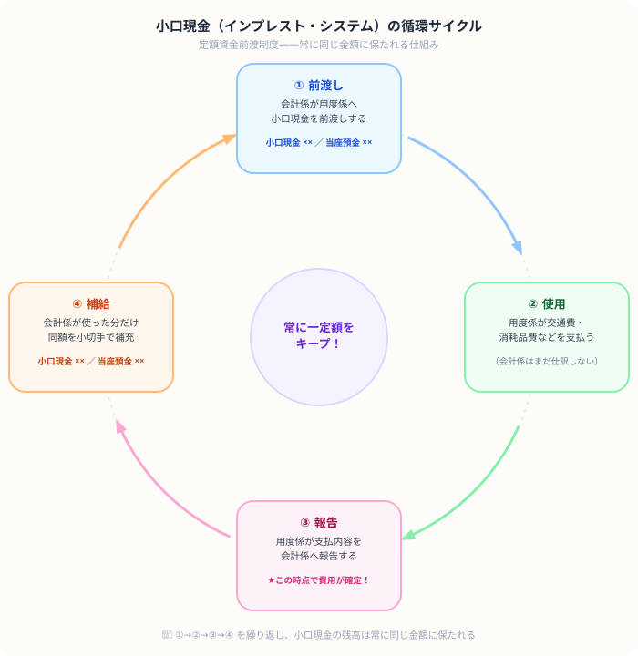

小口現金の仕訳（定額資金前渡制度）
補給・出納帳の書き方まで図解解説
- 小口現金はインプレストシステム——一定額を前渡しし、使った分を定期補給して常に同額に保つ
- 仕訳は会計係（経理）が切る——用度係は小口現金出納帳を記録するだけで仕訳は切らない
- 費用計上のタイミングは「報告を受けたとき」——前渡し時ではなく、支払報告を受けた時点
- 補給の仕訳は「報告受領と同日」の場合と「別の日」の場合で合算できるかどうかが変わる
こんにちは、大谷です！
実は、今回紹介する「小口現金（インプレスト・システム）」ですが、僕が大学の講義で初めてこのカタカナを聴いたとき……「インプレスト？呪文かよ！漢字だらけの次は横文字か……うわっ、なんじゃこりゃ！！」と頭が完全にフリーズした論点でした（笑）。
ですが、本質は【会社のサイフの管理】という、ただのシンプルなパズルです。
今回は、試験本番の決算問題で誰もが引っかかる最凶のトラップの切り抜け方を含めて、僕なりの攻略法をお届けします！
また、僕のモチベーション維持のために、記事の末尾のほうにある【いいねボタン】をポチッと押してもらえると、めちゃくちゃ嬉しいです！
👥 ① 仕組みと登場人物——会計係と用度係の役割分担はどうなっている？

図の通り、会計係が現金を「前渡し」し、用度係が日々の小口支払いを行い、支払内容の報告を受けた時点で会計係が仕訳を計上します。
用度係は小口現金出納帳（帳簿）に記録するだけで、仕訳は切りません。試験では「会計係が仕訳した」という前提で解きます。
📝 ② 3つのタイミングで仕訳を切る——前渡し・報告受領・補給で何が変わるか
試験の第3問（決算問題）で最も多くの受験生が涙をのむのが【決算日までに支払報告は受けたが、補給はまだしていない（未補給）】というパターンです！
このとき、問題文の指示をよく見てください。
・「報告と同時に補給した」なら、貸方は【当座預金】になります。
・「報告を受けた（補給はまだ）」なら、用度係のサイフからお金が減ったままなので、貸方は【小口現金】を直接減らさなければいけません！
この貸方科目の選び方1つで、最終的なB/Sの現金残高がズレて大減点を喰らいます。決算問題では「補給まで完了しているか？」を目を皿のようにしてチェックしましょう！
① 前渡し——小口現金（資産）が発生するだけで費用はまだ計上しない
会計係は用度係に小口現金として ¥50,000 を小切手で前渡しした。
② 報告受領——このタイミングで費用（交通費・消耗品費など）が確定する
用度係から1週間の支払報告があった。交通費 ¥8,000・消耗品費 ¥12,000・通信費 ¥5,000（合計 ¥25,000）。
③ 補給——使った分だけ小切手で補充して小口現金を定額に戻す
例題②の報告と同時に、使用分 ¥25,000 を小切手で補給した。
報告受領と補給が同じタイミングの場合、「小口現金」が相殺されるため：
（借）旅費交通費8,000 ／（貸）当座預金25,000
消耗品費12,000
通信費5,000
とまとめて仕訳することもできます。
📋 ③ 小口現金出納帳——用度係が記録する補助簿の書き方と試験での記入ポイント
用度係は「小口現金出納帳」に支払いを記録します。試験では帳簿の空欄補充問題が出ます。
| 日付 | 摘要 | 受入 | 支払 | 交通費 | 消耗品費 | 通信費 | 残高 |
|---|---|---|---|---|---|---|---|
| 5/1 | 前渡し（補給） | 50,000 | 50,000 | ||||
| 5/2 | 交通費 | 8,000 | 8,000 | 42,000 | |||
| 5/4 | 消耗品 | 12,000 | 12,000 | 30,000 | |||
| 5/6 | 通信費 | 5,000 | 5,000 | 25,000 | |||
| 週計 | 50,000 | 25,000 | 8,000 | 12,000 | 5,000 | 25,000 | |
| 5/7 | 補給 | 25,000 | 50,000 | ||||
「報告を受けたとき」と「補給したとき」が別のタイミングで出ることがあります。
報告受領 → 費用科目 ／ 小口現金
補給 → 小口現金 ／ 当座預金
この2つの仕訳を別々に切ることを忘れずに。
📋 まとめ：小口現金 早見表
この記事が少しでも参考になったら……
小口現金は、横文字に惑わされず「会社のサイフをどう管理するか」というシンプルなパズルだと気づけば、決算問題の未補給トラップも含めて確実な得点源になります。
僕の執筆のモチベーション維持のために、この下にある【いいねボタン】をポチッと押してもらえると、めちゃくちゃ嬉しいです！ そして、Study Questで学習時間を記録しながら、①〜④のサイクルを何度も手を動かして体に染み込ませていきましょう。